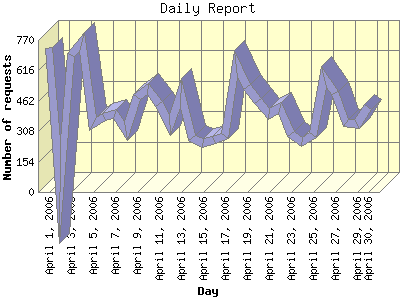

Report generated by Analog 6.0 and Report Magic 2.21
|
Web Server Statistics for "Harish Narayanan (hnarayan) - April 2006" Report generated by Analog 6.0 and Report Magic 2.21 |
The Daily Report identifies the activity for each day within the reporting period. Remember that one page hit can result in several server requests as the images for each page are loaded.

| Day | Number of requests | Number of bytes transferred | Percentage of the bytes | Percentage of the requests | |
|---|---|---|---|---|---|
| 1. | April 1, 2006 | 732 | 38.183 MB | 7.88% | 5.86% |
| 2. | April 2, 2006 | 0 | 0.000 B | 0.00% | 0.00% |
| 3. | April 3, 2006 | 696 | 24.104 MB | 4.98% | 5.57% |
| 4. | April 4, 2006 | 762 | 34.979 MB | 7.22% | 6.10% |
| 5. | April 5, 2006 | 343 | 17.021 MB | 3.51% | 2.75% |
| 6. | April 6, 2006 | 379 | 19.732 MB | 4.07% | 3.03% |
| 7. | April 7, 2006 | 393 | 13.911 MB | 2.87% | 3.15% |
| 8. | April 8, 2006 | 307 | 10.366 MB | 2.14% | 2.46% |
| 9. | April 9, 2006 | 482 | 15.790 MB | 3.26% | 3.86% |
| 10. | April 10, 2006 | 524 | 19.180 MB | 3.96% | 4.20% |
| 11. | April 11, 2006 | 448 | 9.372 MB | 1.94% | 3.59% |
| 12. | April 12, 2006 | 337 | 8.131 MB | 1.68% | 2.70% |
| 13. | April 13, 2006 | 502 | 18.584 MB | 3.84% | 4.02% |
| 14. | April 14, 2006 | 274 | 11.737 MB | 2.42% | 2.19% |
| 15. | April 15, 2006 | 250 | 6.546 MB | 1.35% | 2.00% |
| 16. | April 16, 2006 | 262 | 8.673 MB | 1.79% | 2.10% |
| 17. | April 17, 2006 | 286 | 12.670 MB | 2.62% | 2.29% |
| 18. | April 18, 2006 | 649 | 34.619 MB | 7.15% | 5.20% |
| 19. | April 19, 2006 | 530 | 20.024 MB | 4.13% | 4.24% |
| 20. | April 20, 2006 | 460 | 12.147 MB | 2.51% | 3.68% |
| 21. | April 21, 2006 | 397 | 15.550 MB | 3.21% | 3.18% |
| 22. | April 22, 2006 | 426 | 8.450 MB | 1.75% | 3.41% |
| 23. | April 23, 2006 | 292 | 8.352 MB | 1.72% | 2.34% |
| 24. | April 24, 2006 | 252 | 10.247 MB | 2.12% | 2.02% |
| 25. | April 25, 2006 | 291 | 13.345 MB | 2.75% | 2.33% |
| 26. | April 26, 2006 | 583 | 15.033 MB | 3.10% | 4.67% |
| 27. | April 27, 2006 | 503 | 24.118 MB | 4.98% | 4.03% |
| 28. | April 28, 2006 | 350 | 20.447 MB | 4.22% | 2.80% |
| 29. | April 29, 2006 | 347 | 13.910 MB | 2.87% | 2.78% |
| 30. | April 30, 2006 | 433 | 19.121 MB | 3.95% | 3.47% |
Most active day April 18, 2006 : 418 pages sent. 762 requests handled. 36,678,350.00 served.
Daily average: 430 requests handled. 16.702 MB served.
This report was generated on July 25, 2006 14:40.
Report time frame April 1, 2006 00:16 to April 30, 2006 23:59.
| Web statistics report produced by: | |
 Analog 6.0 Analog 6.0 |  Report Magic 2.21 Report Magic 2.21 |